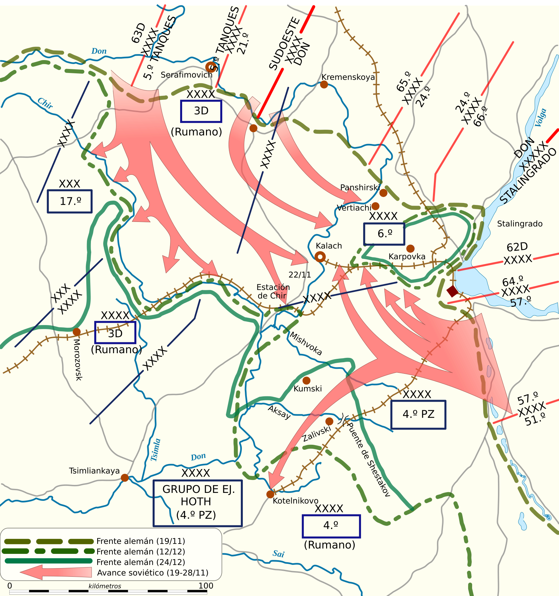

Batalla de Stalingrado
"Más allá del Volga no hay tierra para nosotros." — consigna del Ejército Rojo durante la defensa de la ciudad.
La Batalla de Stalingrado fue uno de los enfrentamientos más grandes, sangrientos y decisivos de la Segunda Guerra Mundial. Enfrentó a la Alemania nazi y sus aliados del Eje contra la Unión Soviética por el control de la ciudad de Stalingrado (actual Volgogrado), un centro industrial y estratégico a orillas del río Volga. La derrota alemana marcó el punto de inflexión de la guerra en el Frente Oriental.
Datos generales
| Fechas | 23 de agosto de 1942 – 2 de febrero de 1943 (5 meses y 10 días) |
|---|---|
| Lugar | Stalingrado (actual Volgogrado), Unión Soviética |
| Frente | Frente Oriental |
| Resultado | Victoria soviética decisiva |
| Bajas estimadas | Cerca de 2 millones entre ambos bandos (militares y civiles) |
Bandos enfrentados
6.º Ejército
3.º y 4.º Ejércitos
8.º Ejército
2.º Ejército
Ejército Rojo
| Eje | Unión Soviética | |
|---|---|---|
| Comandantes | Friedrich Paulus, Erich von Manstein, Hermann Hoth | Vasili Chuikov, Gueorgui Zhúkov, Aleksandr Vasilevski, Andréi Yeriómenko |
| Fuerzas | 6.º Ejército, 4.º Ejército Panzer, unidades rumanas, italianas y húngaras | Frentes de Stalingrado, del Don y del Sudoeste; 62.º Ejército |
Mapa del cerco (Operación Urano)
El 19 de noviembre de 1942, el Ejército Rojo lanzó la Operación Urano: dos ofensivas en pinza que atacaron los flancos débiles defendidos por tropas rumanas, cerrando el cerco cuatro días después cerca de Kalach y atrapando a unos 300.000 soldados del Eje dentro de la ciudad.

Mapa: Wikimedia Commons (dominio público).
Desarrollo
La batalla comenzó con intensos bombardeos de la Luftwaffe sobre la ciudad y el avance del 6.º Ejército alemán, al mando de Friedrich Paulus, hacia el Volga. Los combates se convirtieron en una guerra urbana extremadamente costosa, disputándose edificio por edificio, planta por planta, en lo que los alemanes llamaron Rattenkrieg ("guerra de ratas").
En noviembre de 1942, el Ejército Rojo lanzó la Operación Urano, golpeando los flancos defendidos por los ejércitos rumanos, más débiles. La pinza se cerró cerca de Kalach y dejó al 6.º Ejército rodeado. El intento alemán de romper el cerco desde el exterior (Operación Tormenta de Invierno, dirigida por Manstein y Hoth) fracasó, y el puente aéreo de la Luftwaffe fue incapaz de abastecer a las tropas cercadas durante el crudo invierno soviético.
Aislados, sin munición, comida ni combustible suficientes, y contra la orden expresa de Hitler de no rendirse, los restos del 6.º Ejército capitularon: Paulus el 31 de enero y las últimas bolsas de resistencia el 2 de febrero de 1943.
Consecuencias
- Fue una de las batallas más sangrientas de la historia, con cerca de dos millones de bajas entre ambos bandos, incluyendo civiles.
- Marcó el punto de inflexión del Frente Oriental: a partir de aquí, la iniciativa estratégica pasó de forma permanente a la Unión Soviética.
- Supuso la primera gran capitulación de un ejército alemán y un golpe devastador al mito de invencibilidad de la Wehrmacht.
- El impacto moral fue enorme en ambos bandos y elevó la moral aliada en todos los frentes.